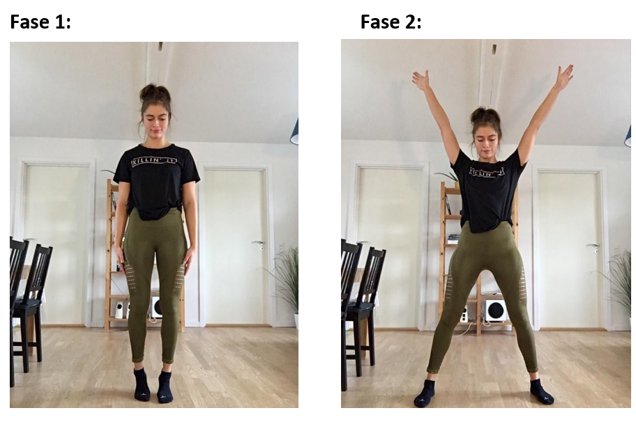
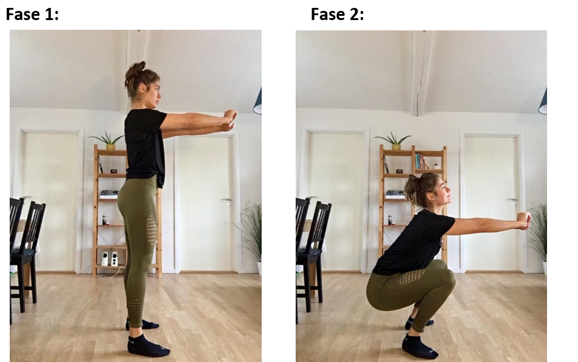
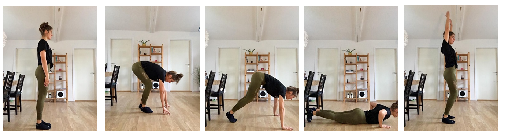
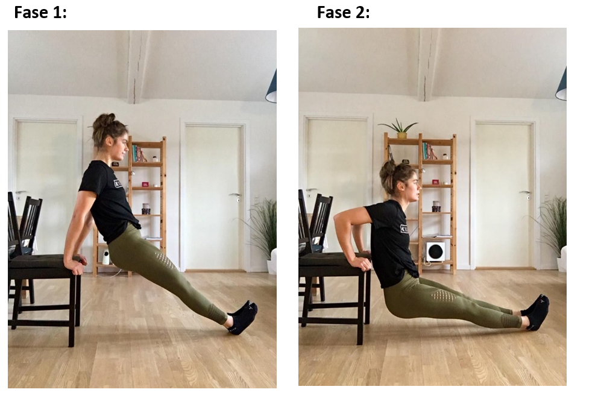
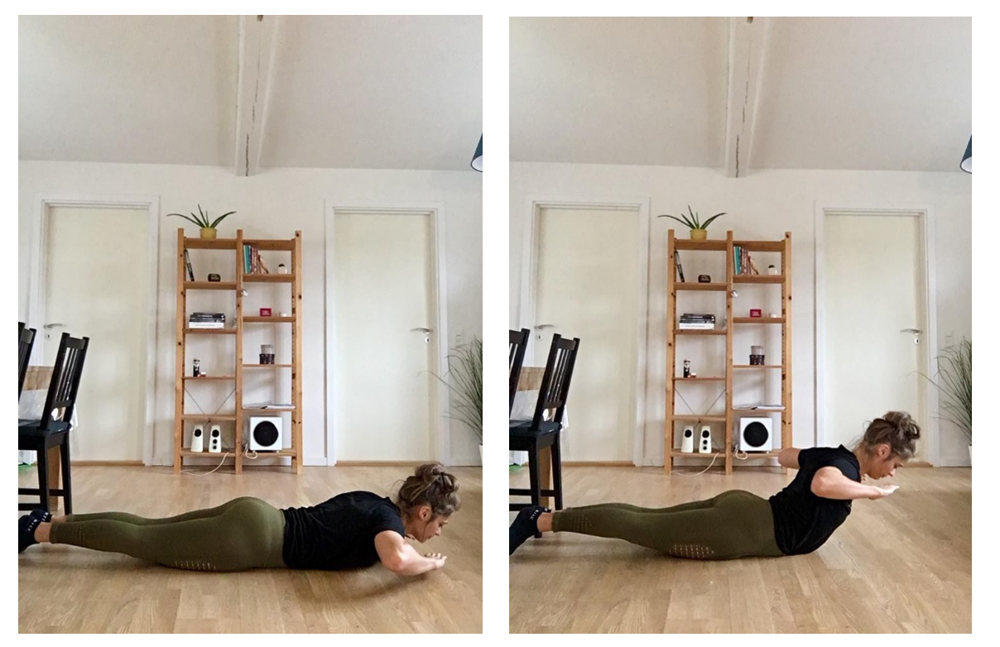
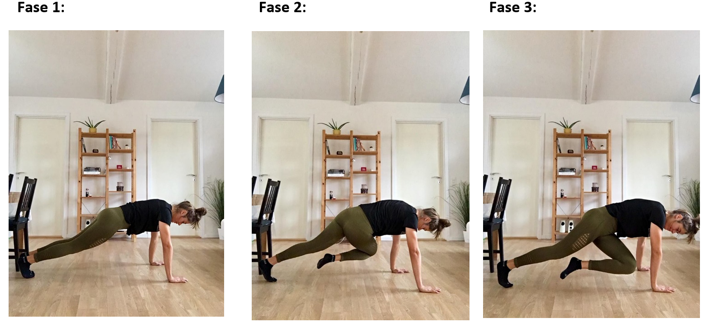

Er det uoverskueligt og tidskrævende at skulle bevæge sig ned i et Fitnesscenter?
Eller ønsker du bare lige en hurtig træning du kan lave hjemme på stuegulvet?
Fortvivl ikke, jeg har samlet 8 øvelser du kan lave derhjemme helt uden vægtstænger og andet fancy grej.
En hurtig og effektiv træning der skubber til pulsen, men også styrker musklerne. – Prøv den!
Sprællemand - 20 gentagelser
Muskel: - Hele kroppen (puls)
Start med at stå med samlet ben og arme, HOP derefter ud som en søstjerne og hop ind igen, så du står som første fase. - Gentag
Squat - 15 gentagelser
Muskel: - Ben og baller
Ryggen skal være ret og du skal spænde op i coren. Stå med ca. Hoftebredde mellem fødderne (eller hvad der falder naturligt), herefter squatter du og lader knæene følge føddernes position.
Split squat - 8 gentagelser på hvert ben (16 i alt)
Muskel: - Ben og baller
Stå med det ene ben oppe på en stol og ta’ et godt skridt fremad med det andet. Ret ryggen og spænd op i coren. Herefter går du ned i en såkladt ”lunge” eller ”spil squat”. (Jeg kan godt lide at have mine arme foran mig på denne måde for at få bedre balance).

Burpees – 8 Gentagelser
Muskel: - Hele kroppen (puls)
Start med at stå oprejst, og fortsæt ned mod jorden, hvor du skal ned og ligge på maven. Når du ligger på maven skal du eksplosivt ”hoppe” op, og slutter øvelsen med at klappe over hovedet. – Gentag dette.
Dips på stol
Muskel: - Triceps, bryst og skulder
Du sætter dig først på stolen, og placerer hænderne i hver side, herefter skubber du numsen ud og står som i første fase. Hejs dig selv ned mod gulvet og op igen – Gentag dette. (For at gøre øvelsen nemmere kan du i stedet for strakte ben, bøje dem – Nu mere bøjet de er, nu nemmere).
Armbøjninger med kravl- 5 Gentagelser
Muskel: - Hele overkroppen (puls)
Lad dine hænder køre ned mod gulvet, og kravl ud indtil du står i en position til at kunne tage en armbøjning, herefter ta en armbøjning – Og kravl tilbage igen. Dette gentages 5 gange.

Back extensions - 15 Getagelser
Muskel: - Ryg (lænd)
Lig ned på maven, med armene på hver side af hovedet - Kig ned mod gulvet. Herefter løfter du overkroppen op med kraft fra din lænd - Kør ned igen og gør det kontrolleret.
Mountain climbers - 15 Gentagelser til hver side (30 i alt)
Muskel: Mave (lænd)
Stå i samme position som i fase 1 og hold armene under dine skuldre, gerne lidt bredt. Kør skiftevis knæet til den modsatte arm.
Programmet gentages 3 gange (Afhænger self af niveau, hvor mange runder du har lyst til at tage). - God træning